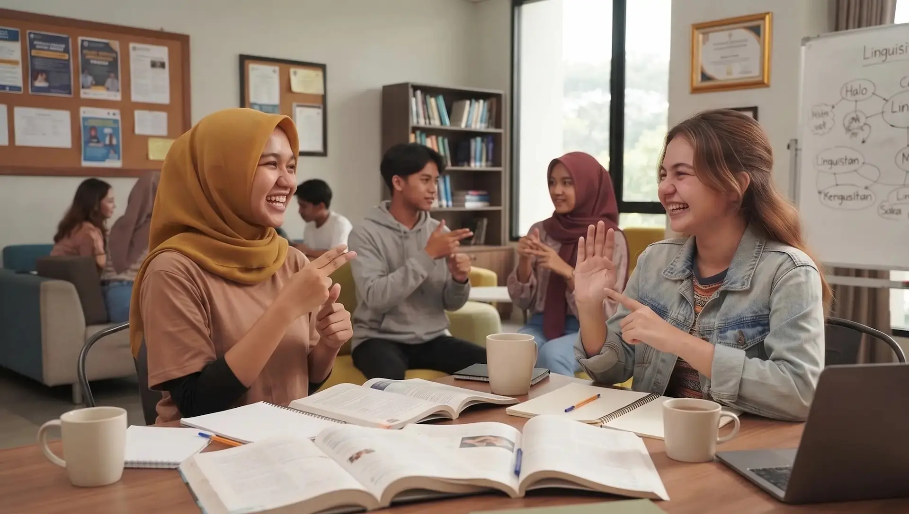
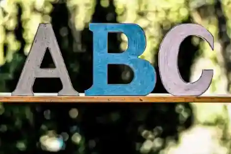
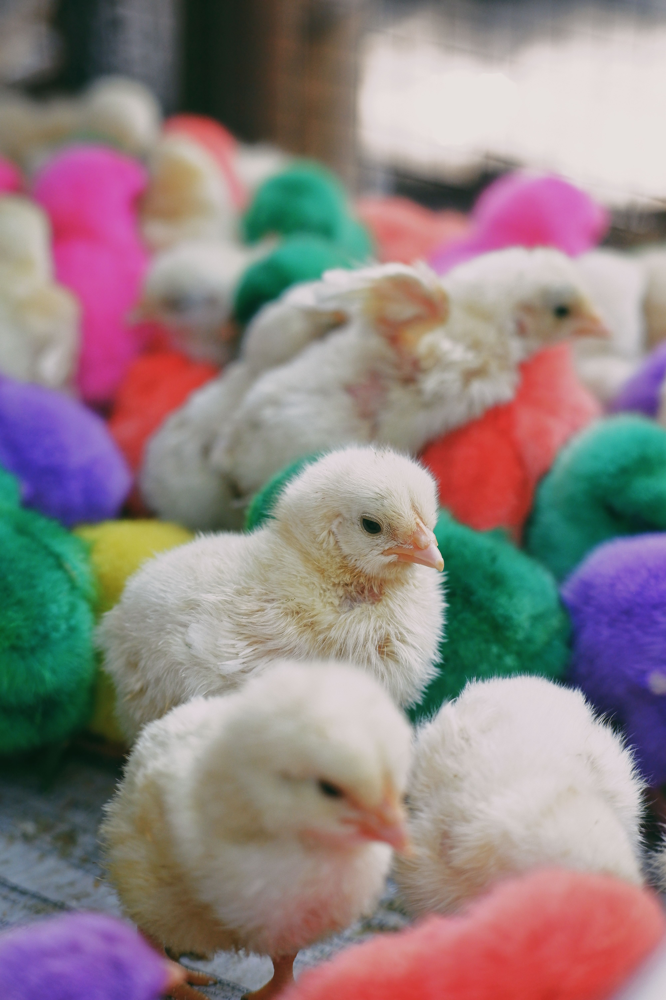
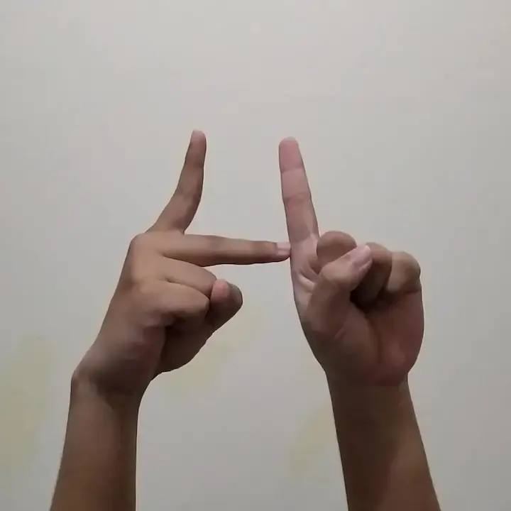
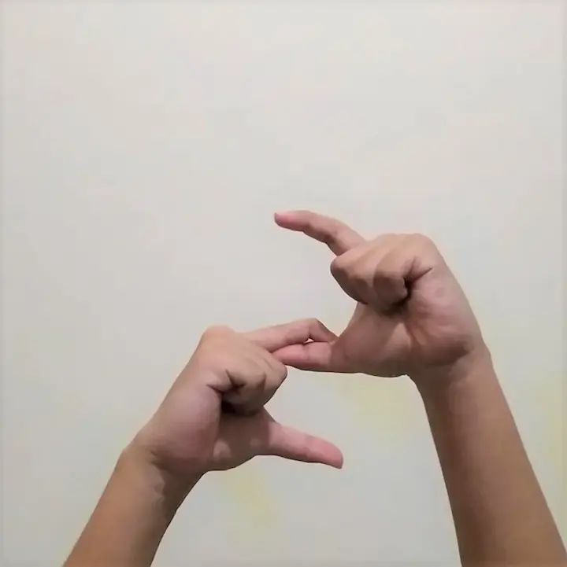
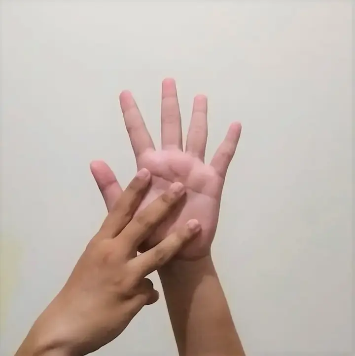
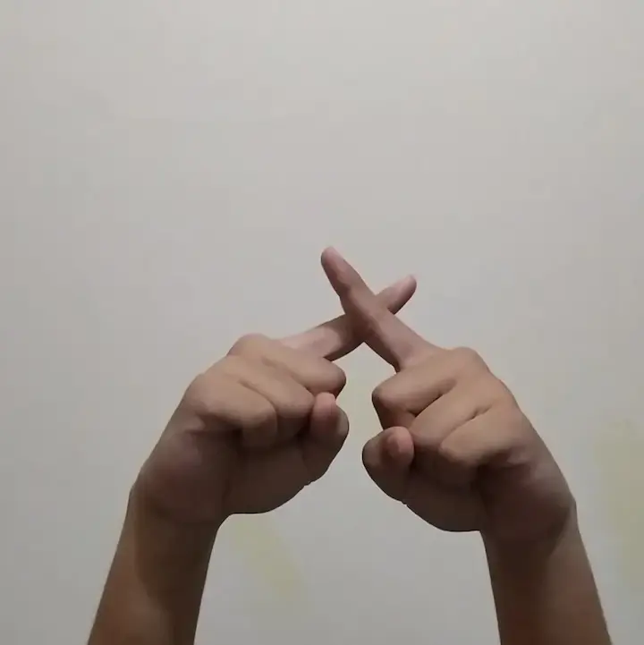

Isyarat bukan sekadar tangan, melainkan berbicara dengan empati.
Kebaikan adalah nyanyian indah yang bisa didengar oleh orang tuli, sekaligus bunga indah yang bisa dilihat oleh orang buta.
& SIBI
empati
Tentang Kami
Bahasa yang menghubungkan, bukan membatasi.
IsyaratOK adalah sebuah website yang berfokus pada edukasi BISINDO & SIBI bagi masyarakat Indonesia. Kami menyediakan modul pembelajaran, kamus kosakata, kuis, serta Asisten AI yang dapat digunakan sebagai sarana untuk mengenal dan mempelajari bahasa isyarat secara lebih praktis.
Kenapa kami ada
Membuka akses, satu langkah demi satu.
Mulai dari hal yang mudah
Materi visual yang sederhana membantu siapa pun berani memulai tanpa merasa tertinggal.
Tumbuh melalui pemahaman
Kurikulum terstruktur membuat proses belajar terasa jelas, konsisten, dan menyenangkan.
Terhubung dengan lebih banyak orang
Karena komunikasi yang inklusif menciptakan ruang yang lebih ramah untuk semua.
Dirancang terstruktur dengan materi BISINDO dan SIBI yang ramah pemula, latihan interaktif, dan kamus visual yang mudah diakses.
Edukasi Modul
Pelajari materi BISINDO dan SIBI langkah demi langkah, dari abjad dasar hingga percakapan sehari-hari.
- Pengenalan BISINDO & SIBI
- Alfabet & Angka Dasar
- Tata Bahasa Isyarat
Kamus Isyarat
Cari kata dan bandingkan visualisasi BISINDO maupun SIBI secara cepat, lengkap dengan foto panduan gestur.
- Pencarian Cepat Abjad A-Z
- Foto Gestur Tangan Jelas
- Contoh Penggunaan Kata
Kuis Interaktif
Uji ingatan dan asah kemampuan menebak gerakan isyarat lewat kuis seru dan penilaian otomatis.
- Tebak Bentuk Gerakan
- Skor & Evaluasi Instan
- Tantangan Bertingkat
Panduan Pintar
Dapatkan saran belajar dan rekomendasi modul yang sesuai dengan kebutuhan dan kecepatan belajarmu.
- Kurikulum Adaptif
- Tips Etika Berkomunikasi
- Bantuan 24 Jam
Mengapa Belajar di IsyaratOK? Mengapa di IsyaratOK
Platform terbaik untuk belajar bahasa isyarat dengan menyenangkan, inklusif, dan menjembatani komunikasi tanpa batas.
Aksesibilitas Tinggi
Materi visual dirancang mudah dipahami untuk semua rentang usia, ramah pengguna pemula, serta memenuhi standar aksesibilitas web modern.
Komunitas Ramah & Solid
Bergabung bersama ribuan pembelajar dan teman Tuli di Indonesia untuk saling berlatih, berdiskusi, dan berbagi wawasan budaya isyarat.
Metode Praktis & Menyenangkan
Belajar bahasa isyarat tidak lagi membosankan melalui kartu gambar interaktif, kuis langsung, dan panduan gestur langkah-demi-langkah.
“Orang tuli bisa melakukan apa saja yang bisa dilakukan orang yang bisa mendengar, kecuali mendengar.”
“Deaf people can do anything hearing people can do except hear.”
— Dr. I. King Jordan (Presiden Tuli Pertama di Gallaudet University)
Kami percaya bahwa setiap bahasa adalah jendela untuk saling mengerti. Dengan mempelajari bahasa isyarat, kita turut serta meruntuhkan stigma, membangun empati, dan mewujudkan masyarakat yang ramah disabilitas.
Data menarik dan perkembangan bahasa isyarat di Indonesia yang terus bertumbuh secara inklusif.
800+
Kosakata Dasar
Panduan digital terverifikasi
Klik untuk infoKosakata Dasar
Kumpulan kata dasar membantu pemula mulai berkomunikasi dalam situasi sehari-hari.
Klik kembali100+
Tahun Sejarah
Perjuangan hak & budaya Tuli
Klik untuk infoTahun Sejarah
Gerakan dan budaya Tuli terus berkembang melalui perjuangan akses, pendidikan, dan kesetaraan.
Klik kembali300+
Juru Bahasa Isyarat
Mendukung akses siaran & acara
Klik untuk infoJuru Bahasa Isyarat
Juru bahasa membantu memperluas akses komunikasi Tuli di ruang publik, pendidikan, dan layanan informasi.
Klik kembali50+
Komunitas Daerah
Tersebar dari Sabang sampai Merauke
Klik untuk infoKomunitas Daerah
Komunitas lokal menjadi ruang belajar, berbagi pengalaman, dan memperkuat jejaring inklusif di berbagai daerah.
Klik kembaliPelajari materi terstruktur langkah demi langkah, mulai dari abjad dasar, ungkapan harian, percakapan praktis, hingga kategori ramah anak.

Level 1Alfabet A-Z
Fondasi utama pembentukan huruf dan ejaan tangan (fingerspelling).
Ungkapan Harian
Salam pembuka, terima kasih, permohonan maaf, dan sapaan akrab.
Percakapan Praktis
Membangun kalimat tanya, ekspresi wajah, dan dialog sehari-hari.

Khusus AnakKategori Ramah Anak
Materi visual bertema hewan, warna, dan benda di sekitar rumah.
Pelajari gestur tangan nyata yang paling sering digunakan dalam interaksi sehari-hari. Klik kartu untuk melihat panduan gestur lengkap di kamus.

Sapaan BISINDOHalo
Lambaikan tangan terbuka di samping pelipis atau dahi
Terima Kasih
Sentuh dagu dengan ujung jari lalu arahkan ke depan

Ungkapan BISINDOSama-Sama
Kedua tangan terbuka telapak atas digerakkan ke depan

Ungkapan BISINDOMaaf
Putar kepalan tangan melingkar lembut di atas dada
Tolong
Satu tangan menopang tangan terbuka ke arah atas

Sosial BISINDOTeman
Kaitkan jari telunjuk kedua tangan secara bergantian
Jawaban singkat untuk membantu kamu menemukan cara belajar yang paling nyaman.
Apa itu IsyaratOK?
IsyaratOK adalah platform edukasi interaktif untuk membantu masyarakat mempelajari bahasa isyarat dengan cara yang mudah, visual, dan inklusif.
Bahasa isyarat apa yang dipelajari di IsyaratOK?
IsyaratOK menyediakan materi mengenai BISINDO dan SIBI, mulai dari alfabet, angka, kosakata sehari-hari, hingga percakapan praktis.
Apakah IsyaratOK cocok untuk pemula?
Tentu. Materi disusun secara bertahap, mulai dari dasar seperti alfabet dan ungkapan sehari-hari hingga percakapan praktis, sehingga dapat diikuti oleh orang yang belum memiliki pengalaman belajar bahasa isyarat.
Apa saja yang bisa dilakukan di IsyaratOK?
Kamu dapat mempelajari materi edukasi, mencari kosakata melalui kamus isyarat, melihat panduan gestur, dan menguji pemahaman melalui kuis interaktif.
Apakah IsyaratOK hanya ditujukan untuk penyandang disabilitas?
Tidak. IsyaratOK ditujukan bagi siapa saja yang ingin mempelajari bahasa isyarat dan membangun komunikasi yang lebih inklusif dengan Komunitas Tuli.